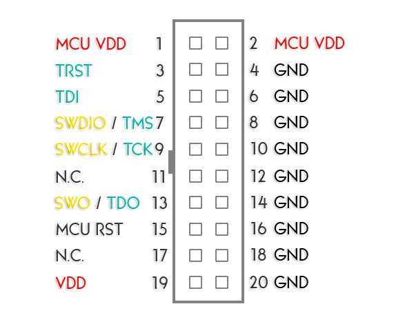

Hardware
Ontwerp programma hardware
Printplaat
Voor het ontwerp van de printplaat word gebruik gemaakt van het gratis programma KiCAD. Dit is een printplaat ontwerp programma met ruime functionaliteit die voldoet aan al onze eisen. Een handleiding hiervoor staat in het engels beschreven in deze link.
Technische specificatie
De microcontroller die gekozen is voor het project is de STM32F412RGT6 van ST Microelectronics. Deze chip heeft genoeg ruimte en besturingsmogelijkheden om voldoende programma's van komende jaren met gemak te kunnen draaien. Daarnaast bevat deze chip meerdere communicatiemogelijkheden die in de toekomst gebruikt kunnen worden.
Klokken van de microcontroller
Een klok binnen een microcontroller zorgt voor coordinatie van vercheidene operaties. Er kunnen per microcontroller meerdere klokken gebruikt worden, binnen dit project worden er twee gebruikt.
Hoge Snelheids Extern kristal (HSE)
Voor het Hoge Snelheids Extern kristal (HSE) word momenteel een 8 MHz resonator gebruikt. Deze zijn niet duur en bieden meer precisie dan de ingebouwde RC klok. Een standaard integratie is te zien in de hieropvolgende afbeelding.
Meer informatie over een fatsoenlijke layout en integratie is te vinden in AN2867 “Oscillator design guide for ST microcontrollers", beschikbaar via de website van ST-Microelectronics.
Mocht er gekozen worden voor het gebruik van de interne clock, kan de plaatsing van de relevante componenten tijdens de print assemblage overgeslagen worden. Stel dat de klok het niet doet na verandering van het component kan eventueel de externe weerstand (REXT in bovenstaande afbeelding) naar 0 Ω gezet worden.
Huidig component in gebruik
Momenteel word gebruik van de Kitelco 8 MHz SX-1T&RC16 gemaakt. Dit is een 8 MHz resonator met aan weerskanten laad condensatoren van 16 pF, die zorgen voor verbeterde stabiliteit van het signaal. Daarnaast is de externe weerstand (REXT in bovenstaande afbeelding) berekend op 1.2 kΩ via sectie 3.5.3 van AN2867.
Indien dit in de toekomst verandert moet er opnieuw via de datasheet van het nieuwe component gekeken worden naar de laad condensatoren en naar de externe weerstand.
Real-Time Clock kristal (RTC)
Voor de RTC is een externe clock gewenst en in gebruik, omdat deze meer precisie bied qua dingen die op tijd basis gaan. Deze moet een frequentie hebben van 32.768 kHz, wat een industrie standaard is. Hieronder is een standaard integratie weergegeven.

Meer informatie over een fatsoenlijke layout en integratie is te vinden in AN2867 “Oscillator design guide for ST microcontrollers", beschikbaar via de website van ST-Microelectronics.
Huidig component in gebruik
Momenteel word gebruik van de YIC 32.768K12.5PI/MC306 gemaakt. Dit is een 32.768 kHz resonator met aan weerskanten laad condensatoren van 7 pF, die zorgen voor verbeterde stabiliteit van het signaal.
Indien dit in de toekomst verandert moet er opnieuw via de datasheet van het nieuwe component gekeken worden naar de laad condensatoren. LET OP: Dit component heeft een niet standaard footprint in KiCAD.
Programmeren via SWD
Voor het programmeren van de STM32 word een STLINK/V2 gebruikt. Deze heeft de volgende pinconfiguratie beschikbaar:

Voor het programmeren van de microcontroller moeten de volgende pinnen aangesloten zijn op de volgende manier:
- GNDSTLINK naar GNDSTM32
- VDDSTLINK naar 3V3STM32
- SWDIOSTLINK naar SWDIOSTM32
- SWCLKSTLINK naar SWCLKSTM32
- MCU VDD STLINK (ookwel VDUT genoemd) naar 3V3STM32
Externe voeding
Indien de STLINK/V2 op zichzelf niet genoeg stroom levert kan er een externe voeding gebruikt worden in combinatie met de hierbovenstaande pinconfiguratie. LET OP: sluit niets met een spanning hoger dan 3.3 V aan op de 3V3 poort, dit kan schade aan de basismodule of STLINK toebrengen! Verifieer dit voor het aansluiten met een multimeter.
Voeding van 5 V tot 30 V
De positieve pool van deze voeding moet aangesloten worden op de VIN pin en de negatieve pool op de GND pin. Beide pinnen zijn te vinden op de normale snelheidsbus (Regular I/O). De desbetreffende pinnen zijn te vinden onder het kopje Hardware.
Voeding van 3.3 V
De positieve pool moet op een van de 3V3 pinnen terecht komen via de voeding zelf of het STM32 bord. De negatieve pool kan verbonden worden met een GND pin op de basismodule of de STLINK/V2. Deze pinnen zijn op de basismodule gemarkeerd.